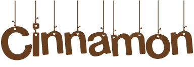

Register
Log in
Alih-alih pergi makan malam, belilah bahan makanan yang baik. Memasak di rumah menunjukkan rasa kasih sayang. Dalam ekonomi yang buruk, lebih penting untuk membuat dirimu merasa bahagia
Cari resep